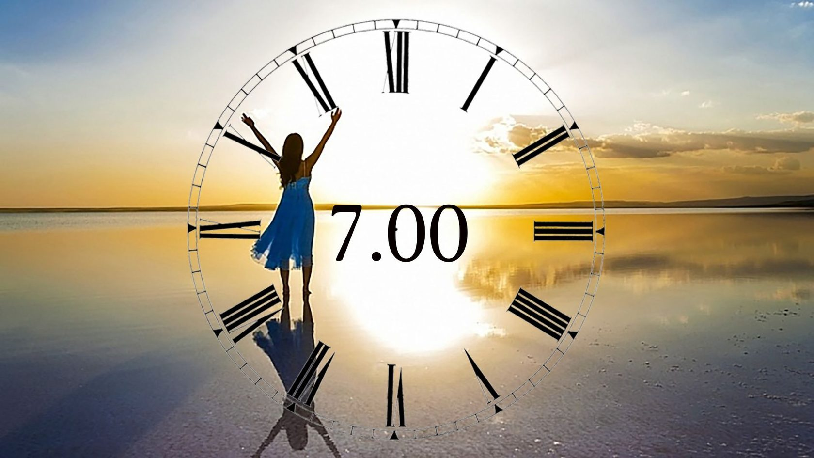

1. Для чего необходимо соблюдать режим дня, а также двигательный режим?
2. Сколько необходимо отводить времени для сна в летнее и зимнее время для учащихся 10-11 классов?
3. Сколько времени учащиеся должны выделять для занятий спортом?
4. Что на 50% отвечает за здоровье человека?

5. В какие часы первой половины дня происходит подъем суточной активности?
6. В какое время второй половины дня увеличивается мышечная активность?
7. На сколько процентов двигательная активность у девочек ниже, чем у мальчиков?
8. В какое время года происходит сезонное снижение двигательной активности?

9. В какое время года лучше всего в большей степени повысить двигательную активность?
10. Какое среднесуточное число локомоций соответствует биологической потребности школьников старшего возраста?
11. Какое время в неделю рекомендовано отводить на физические нагрузки для девушек старшего школьного возраста?

12. Какое время в неделю рекомендовано отводить на физические нагрузки для юношей старшего школьного возраста?
13. Выберите правильное определение режима дня
14. Необходимо ли принимать пищу в одно и тоже время?
15. Сколько раз в день рекомендовано принимать пищу?